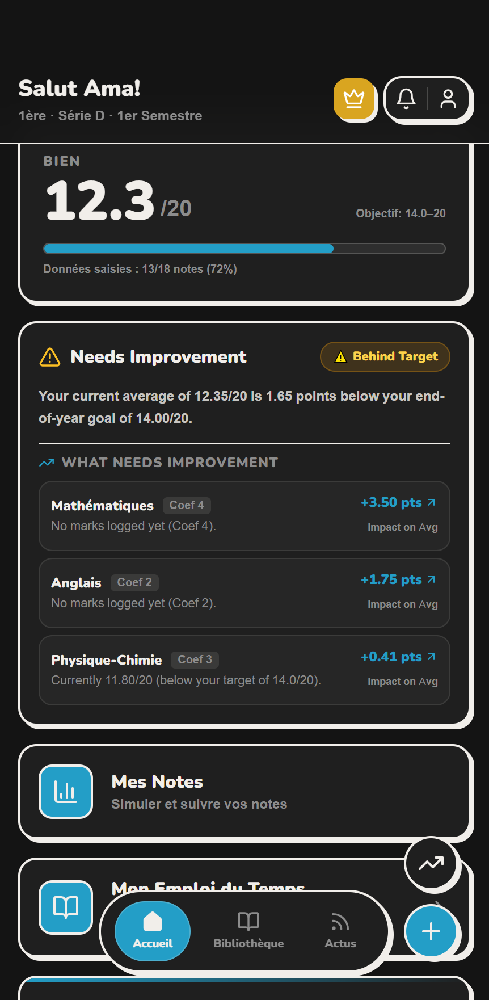
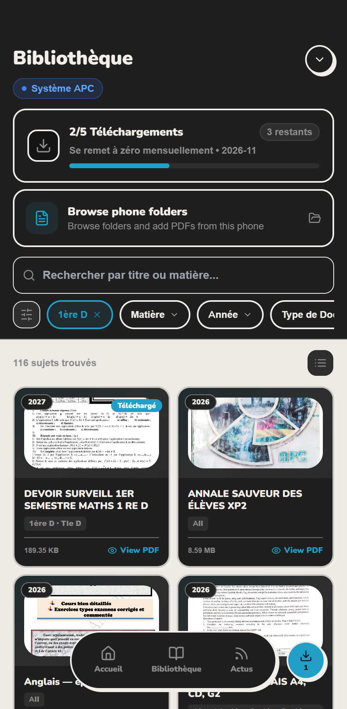
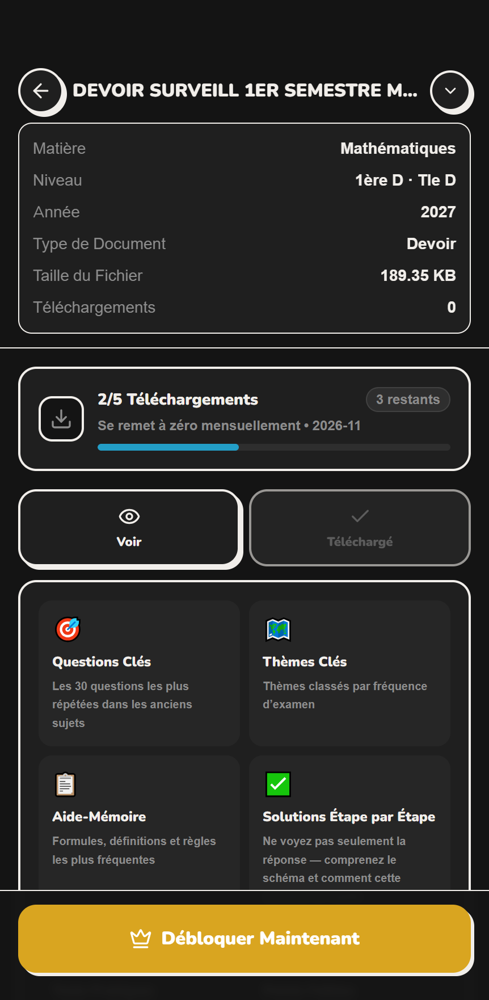
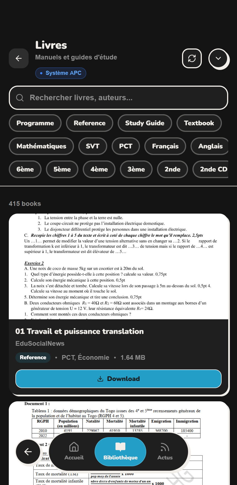
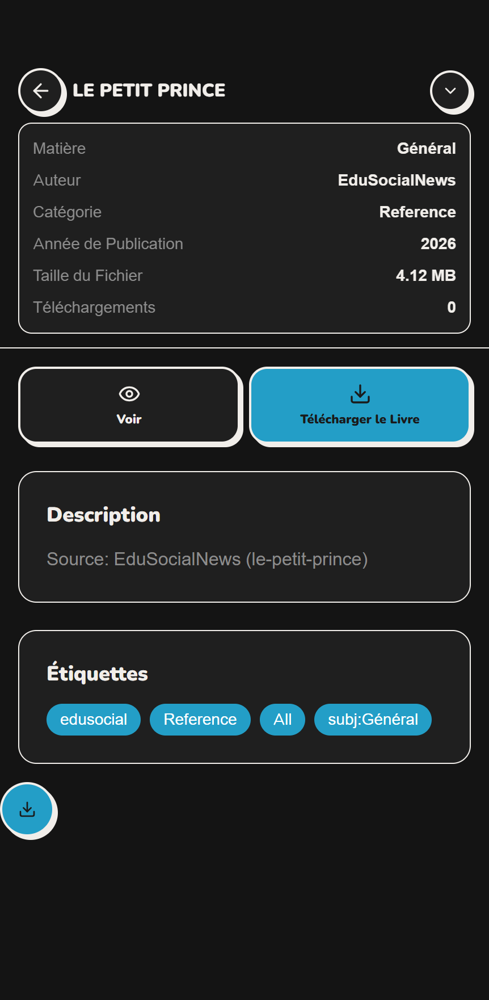
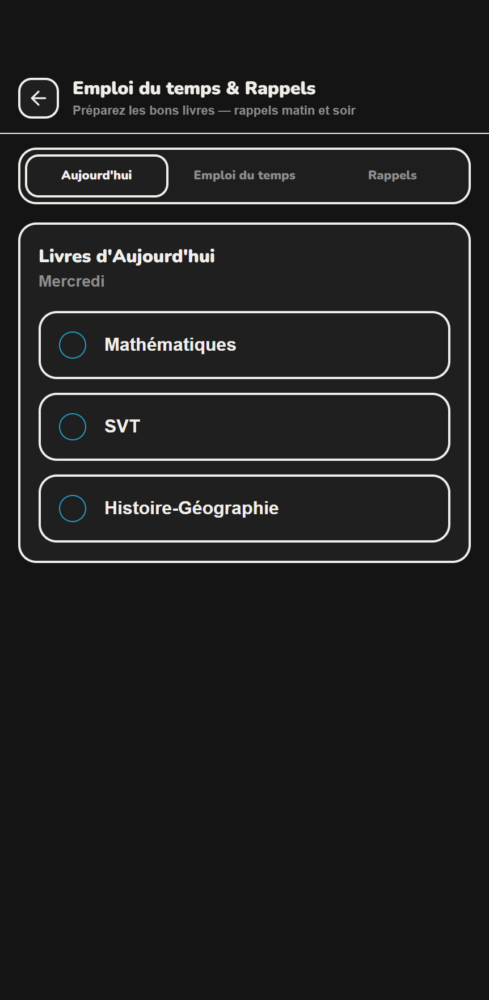
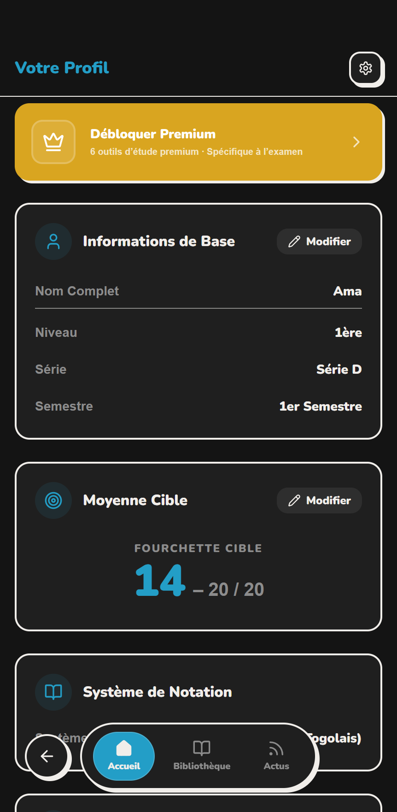

GoStudy
Track. Practice. Pass.
One app for the average, the plan and the past papers. GoStudy turns every mark into a clear next step — built first for the APC system.
Product guidebook · 2026 edition
One app for the average, the plan and the past papers. GoStudy turns every mark into a clear next step — built first for the APC system.
This guidebook explains what GoStudy does, screen by screen, in plain language. It is written for readers who may never have opened the app: investors, school leaders and partners. Every screenshot is taken from the shipping build.
What it is — the purpose of the screen in one sentence.
How it is used — the actions a student takes there.
Good to know — details that matter to schools and partners.
Screenshots are in French because French is the app's default language; every screen also exists in English.
A secondary student carries marks from tests, homework and compositions across six to ten subjects. Each subject has a coefficient, each mark type has a weight, and the school applies its own rounding. Students copy numbers into notebooks, guess their average, and find out too late that one weak subject is pulling the whole year down.
Past papers are another problem: PDFs scattered across phones, WhatsApp groups and photocopies, with no way to know which year, level or subject a document belongs to.
The catalogue, the grading rules and the study tools are designed for the APC competency-based system used in Togolese secondary schools. The French and WAEC systems are present in the product architecture but remain under development; they are not presented here as finished features.
| Area | What it includes | Status |
|---|---|---|
| Grade tools | APC average with coefficients and mark weights, target tracker, what-if simulator, semester history | Live |
| Study planner | Weekly timetable, "books to bring today" checklist, morning and evening reminders | Live |
| Exam library | 395 papers from 2002 to 2027: BAC, BEPC, Probatoire, CEPD, CAP, entrance exams, compositions and practice sets | Live |
| Book library | 415 books: programmes, references, textbooks and study guides | Live |
| Actus feed | Announcements, exam guidance and partner news, with search and categories | Live |
| Exam prep | Top 30 repeated questions, "what to study" guide, key themes, cheat sheets, step-by-step solutions | Premium |
| Offline use | Downloaded papers and books open without a connection; the Windows app keeps a local catalogue | Live |
| Languages | French and English, switchable at any time | Live |
The student enters a name, class level, series, semester, a target average and the subjects being studied. The app applies the right coefficients. Setup takes about two minutes and can be edited later from the profile.
Each subject has three mark slots — interro (class test), devoir (homework) and composition (exam). Marks can be entered one at a time; blanks are allowed, and the app shows how much of the year has been captured.
The home screen shows the current average, a status band (Excellent / Good / Needs improvement), the distance to the target, and the three subjects that would move the average most if improved.
The simulator lists every mark still missing and lets the student drag a value for each one. The projected average updates instantly, so the student can see what a 12 or a 15 in the next composition would do.
In the library the student filters by class, subject, year and document type, previews a paper, then downloads it. Downloaded papers stay available offline and appear in the downloads screen.
| Tool | What it does | Plan |
|---|---|---|
| Average calculator | Applies coefficients, mark weights and the chosen rounding rule to produce the subject and yearly average. | Free |
| Target tracker | Compares the average with the student's target range and states the gap in points. | Free |
| Improvement ranking | Orders subjects by coefficient-weighted impact, so effort goes where it pays. | Free |
| What-if simulator | Sliders for missing marks with a live projected average; the scenario can be saved. | Free |
| Semester history | Archives each semester so the year can be reviewed, not just the current term. | Premium |
| Weekly planner | Subjects per weekday, a "today" checklist of books to bring, and reminder times. | Free |
| Paper library | Search and filter 395 papers; preview and download PDFs. | Free |
| Book library | 415 books with covers, categories and the same download flow. | Free |
| Downloads manager | Quota, storage use, offline access, search and deletion of downloaded files. | Free |
| Actus feed | Announcements and guidance posts with images, categories and bookmarks. | Free |
| Exam prep | Top 30 questions, study guide, key themes, cheat sheets and worked solutions per subject. | Premium |
| Premium codes | Activation codes bought from a school or reseller, redeemed in the app without a card. | Premium |
| Profile & settings | Identity, target, subjects, theme, accent colour, language, weights and rounding. | Free |

The first screen a new student sees. It sets the tone in one sentence — follow every mark, see the average live — and offers two ways in.

A single summary of the year: the current average out of 20, a status band, the target range, how much of the year has been entered, and the subjects that deserve attention.

395 exam papers from 2002 to 2027, each labelled with subject, class level, year, document type and file size. The first page of every paper is used as its thumbnail, so students recognise a document before opening it.

The detail page for a single paper: subject, level, year, document type, file size and download count, followed by the actions a student needs.

A second catalogue for longer documents: official programmes, reference books, textbooks and study guides. Each entry has a cover, a category, a subject and a class level.

The book equivalent of the paper page: subject, author, category, publication year, file size and download count, plus a description and tags.

A simple weekly planner built around the school timetable. It answers one question every morning: which books do I need today?

The simulator takes every mark the student has not entered yet and turns it into a slider. Moving a slider changes the projected yearly average in real time.

A lightweight news feed for announcements: exam calendars, study advice, new library content and partner messages. It is the app's communication channel with students.
Everything the student has saved to the device, with the space it uses, the space left and the monthly download allowance.

A premium section that turns the paper archive into a revision plan: which questions repeat, which themes matter, which formulas to memorise and how to write a full answer.

The place where the profile behind every calculation is stored and edited: name, class, series, semester, target average, grading system and the list of subjects with their coefficients.
All the preferences that affect how marks are interpreted, plus the visual and language options.

A guide explaining how premium is bought in the real world: the student pays a school or a reseller, receives an activation code, and enters it in the app.
APC does not average marks in a straight line. Each subject has a coefficient, each mark type has a weight, and the school decides how to round. GoStudy encodes those rules once and applies them consistently.
| Mark | Meaning | Default weight |
|---|---|---|
| Interro | Short class test | 1 |
| Devoir | Homework or take-home task | 1 |
| Composition | End-of-term exam | 2 |
Weights are editable in settings.
A student sets a range such as 14–20. The app compares the current average with the lower bound and reports the gap in points, plus a status band: surpassing, on track, behind or no data yet.
The improvement ranking multiplies the points a subject could gain by its coefficient. That is why a coefficient-4 subject appears above a coefficient-2 subject even when both are equally weak.
| Type | Count |
|---|---|
| Practice sets | 131 |
| Compositions | 71 |
| BEPC | 40 |
| Baccalauréat | 39 |
| CEPD | 34 |
| Devoirs | 26 |
| Probatoire | 18 |
| Concours | 11 |
| Annales | 10 |
| Revision | 9 |
| CAP | 6 |
| What you get | Free | Premium |
|---|---|---|
| Subjects in the profile | 3 | Unlimited |
| Library downloads | 5 per month | Unlimited |
| Average calculator, target tracker, simulator | Included | Included |
| Weekly planner and reminders | Included | Included |
| Exam library and book library | Included | Included |
| Actus feed | Included | Included |
| Exam prep tools | — | Included |
| Semester history | — | Included |
| Devices per activation code | No limit | 2 |
| Duration | Price | Notes |
|---|---|---|
| 1 month | 1,500 FCFA | Entry plan |
| 3 months | 4,500 FCFA | One term |
| 6 months | 9,000 FCFA | Two terms |
| 12 months | 18,000 FCFA | Best value, covers the school year |
| Single subject | 500 FCFA | Lifetime access to that subject's tools |
| All subjects | 1,500 FCFA | Lifetime access to every subject |
A 13.8 MB install. The full catalogue is browsable, papers are downloaded on demand, and downloaded files open without a connection. PDFs can also be imported from other folders on the phone.
The same product in a browser, for computer rooms and students without space for another app. The interface adapts to phone and desktop widths.
A desktop build with the catalogue included, so the library is available on first launch even before anything is downloaded. A 168.5 MB installer and a 137 MB portable version are produced from the same codebase.
French and English across every screen, switchable in settings and on the welcome screen. French is the default for the APC market.
| Situation | What the student sees |
|---|---|
| No connection, nothing downloaded | The library and Actus show a clear offline message with a retry action; the calculator and planner keep working. |
| No connection, files downloaded | Downloaded papers and books open normally; the downloads screen works as usual. |
| Connection returns | The catalogue refreshes automatically; new papers appear without reinstalling. |
| Windows desktop | The catalogue ships with the app and is refreshed in the background; recently opened files are cached on the device. |
| System | Status | What exists today |
|---|---|---|
| APC | Live | Full grading engine, coefficients, 40/60 split, target tracking, simulator, and the complete 395-paper / 415-book catalogue. |
| French traditional | In development | Grading structure and screens exist in the product, but the catalogue and the school-specific rules are not finished. Not sold as a finished system. |
| WAEC / NECO | In development | Planned as a separate grading model and content set. No WAEC papers are in the library yet. |
| Nigerian university GPA | Early build | A GPA/CGPA calculator exists as exploratory work. It is not part of the APC offer. |
No phone number, no location, no contacts, no camera and no payment details are required to use the app.
Guest profiles live on the device. A student who never signs in keeps every mark locally.
The privacy policy is written in plain language and is reachable from settings and from the store listing. For a school pilot, the useful promise is simple: the app needs nothing from a student that a school would not already hold, and it keeps the academic record on the device unless the student chooses to sign in.
GoStudy already does the hard part: it calculates APC averages correctly, turns them into advice, and puts 810 documents in a student's pocket. The next chapter is reach — more schools, more systems, more languages.
395 exam papers · 2002–2027
415 books · 2.03 GB
16 subjects · 11 document types
Android · Web · Windows
French · English
Free plan · Premium codes
Prepared for investors and partners · November 2026 · Version 1.3.4
Screenshots taken from the shipping build. Prices and plans as published
in the app at the time of writing.